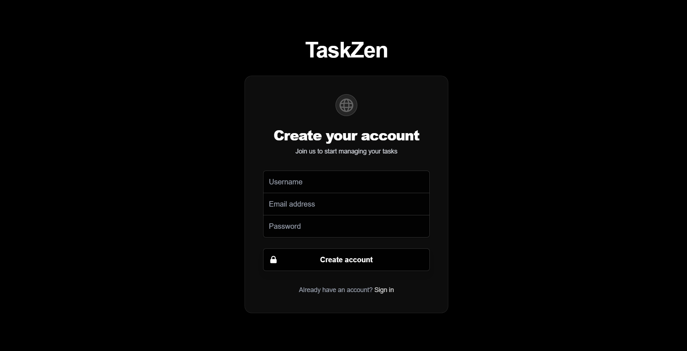

01 / FEATURED PROJECTAI TRAVEL PLANNING
 VIEW LIVE SITE ↗
VIEW LIVE SITE ↗An intelligent trip planner that turns preferences, budgets, and interests into personalized travel itineraries.
Full-stack developer & AI engineer creating thoughtful digital experiences.
Explore my work ↘Intelligent tools. Thoughtful interfaces. Three projects that bring design and development together.
Explore GitHubVIEW LIVE SITE ↗An intelligent trip planner that turns preferences, budgets, and interests into personalized travel itineraries.
 EXPLORE THE CODE ↗
EXPLORE THE CODE ↗AI-powered content creation, scheduling, and engagement for social media management.

EXPLORE THE CODE ↗Collaborative task management with real-time updates, team workflows, and intuitive organization.
I’m Gourav, a full-stack developer who cares as much about how an experience feels as how it works.
I build modern web applications with React, Next.js, and Node.js, bringing together thoughtful interfaces, reliable backends, and AI that serves a purpose.
From a travel-planning idea to a real-time collaborative tool, I enjoy turning complex problems into clear, usable experiences.
A closer look at my résumé ↗React · Next.js · JavaScript · HTML · CSS · Tailwind CSS
Node.js · Express · REST APIs · MongoDB · Firebase · JWT
LLM integration · Gemini API · GitHub · Docker · Postman
Building end-to-end AI applications, integrating LLMs, and developing Haven, a real-time real estate platform. Collaborating on Safar AI with advanced prompt engineering.
Developed animated landing pages and custom content management systems, connecting design and engineering to deliver responsive, high-performance websites.
Senior Secondary · 2020–2021
Secondary · 2018–2019
Tagore International School